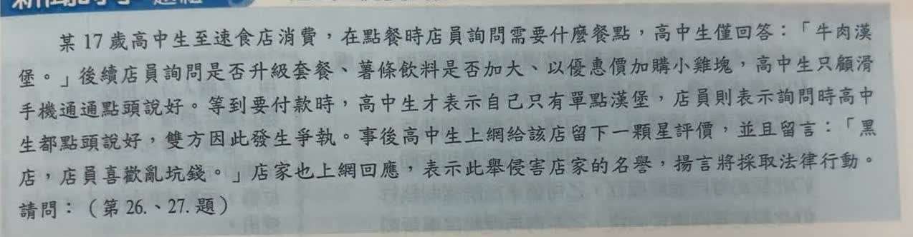
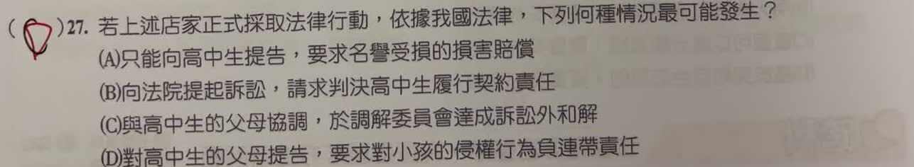

分享原卷｜第 27 題
完整原題
作答所需文章／材料
【速食店點餐糾紛】 某17歲高中生至速食店消費，在點餐時店員詢問需要什麼餐點，高中生僅回答：「牛肉漢堡。」後續店員詢問是否升級套餐、薯條飲料是否加大、以優惠價加購小雞塊，高中生只顧滑手機通通點頭說好。等到要付款時，高中生才表示自己只有單點漢堡，店員則表示詢問時高中生都點頭說好，雙方因此發生爭執。事後高中生上網給該店留下一顆星評價，並且留言：「黑店，店員喜歡亂坑錢。」店家也上網回應，表示此舉侵害店家的名譽，揚言將採取法律行動。若上述店家正式採取法律行動，依據我國法律，下列何種情況最可能發生？
(A) 只能向高中生提告，要求名譽受損的損害賠償
(B) 向法院提起訴訟，請求判決高中生履行契約責任
(C) 與高中生的父母協調，於調解委員會達成訴訟外和解
(D) 對高中生的父母提告，要求對小孩的侵權行為負連帶責任
先想一想，再查看答案、解說與原圖
原卷作答：D
正確答案：D。依民法第187條，有識別能力的未成年人不法侵害他人權利時，法定代理人可能與其連帶負責，符合本題要考的責任關係。
逐項解析
| 選項與原句 | 判讀 | 句意與判斷理由 |
|---|---|---|
| (A) 只能向高中生提告，要求名譽受損的損害賠償 | 不選 | 未成年人如有識別能力且成立侵權，可能與法定代理人連帶負責，不限於只能向本人求償。 |
| (B) 向法院提起訴訟，請求判決高中生履行契約責任 | 不選 | 題文所述店家揚言採取行動，是針對網路評論侵害名譽，不是直接要求支付餐費的契約履行問題。 |
| (C) 與高中生的父母協調，於調解委員會達成訴訟外和解 | 不選 | 在調解委員會依調解程序達成的結果稱為調解，不能把本題的制度名稱直接換成訴訟外和解。 |
| (D) 對高中生的父母提告，要求對小孩的侵權行為負連帶責任 | 應選 | 依民法第187條，有識別能力的未成年人不法侵害他人權利時，法定代理人可能與其連帶負責，符合本題要考的責任關係。 |
詳細說明與解題步驟
一、找出店家這次要追究的行為
店家回應的是一星評論與「黑店，店員喜歡亂坑錢」的留言，主張這些內容侵害名譽。這與餐點價金是否已付的契約爭議不同，不能把兩種法律關係混在一起。
二、17歲不代表沒有侵權責任
17歲屬限制行為能力人，但侵權責任還要看行為時有無識別能力。依民法第187條，未成年人有識別能力而不法侵害他人權利時，原則上與法定代理人連帶負損害賠償責任，因此D最符合本題的考點。
三、父母責任有法定條件
法定代理人若證明監督並未疏懈，或即使相當監督仍無法避免損害，依法有免責規定。因此不能背成孩子一有負面評論，父母就必定賠償。
四、起訴與勝訴不是同一回事
店家採取法律行動，不等於評論已被法院認定違法。仍須判斷陳述的事實、評論語境、不法性及損害等。這題是在辨認可能的求償對象與責任關係，不是已證明高中生一定侵權。
核對依據：民法第187條。
https://law.moj.gov.tw/LawClass/LawSingle.aspx?pcode=B0000001&flno=187
核對註記：已核對題幹、全部選項與必要材料；教材對應課次未確認，歸綜合。
原圖（僅本題）

